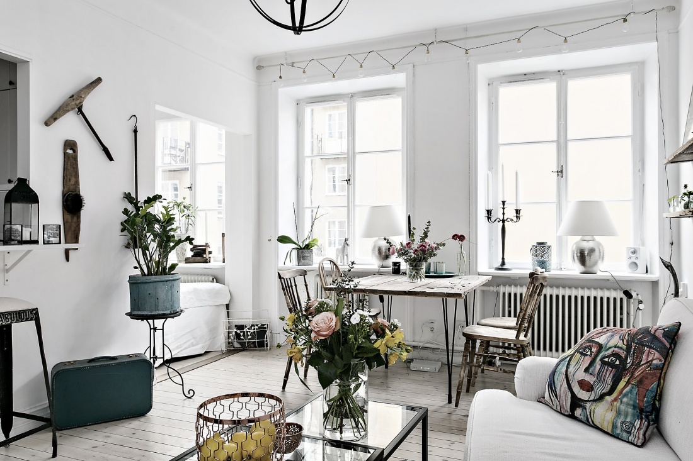

Stil
retro
Stilul retro este o alegere tot mai des întâlnită în amenajările interioare care îmbină armonios elemente desprinse din secolele trecute. Inspirat din anii designul specific anilor ‘60-‘70, stilul retro se integrează perfect în decorurile contemporane care au personalitate – pentru că, în esență, stilul retro este unul care atrage imediat atenția, care răpește privirea celor care trec pragul locuinței, datorită culorilor sale îndrăznețe, a pieselor de mobilier jucăușe și a elementelor decorative cu tot felul de texturi și modele interesante.
Daca luam în considerare contextul istoric în care acest stil a prins rădăcini, și anume anii ‘60, epoca în care tinerii promovau libertatea și pacea, nici nu este surprinzător faptul că este un stil liber, care nu ține cont de reguli. Acest lucru nu înseamnă, însă, că mixarea elementelor se poate face oricum ne-am dori. Există, totuși, o serie de caracteristici și de trucuri pe care ar fi bine să le luam în considerare, astfel încât să cream amenajări retro cu bun-gust.
|  |
●Sfaturi utile pentru o amenajare în stil retro
Există câteva linii generale pe care ai putea să le iei în considerare și pe care ai putea să le combini după bunul plac, astfel încat să obții un design armonios. Iată câteva sfaturi de care îți sugerăm să ții cont în amenajarea locuinței tale: